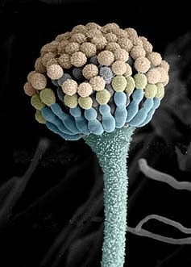

Terry W. HillProfessor of Biology
|
Loretta Jackson-HayesProfessor of Chemistry
|
Terry W. HillProfessor of Biology
|
Loretta Jackson-HayesProfessor of Chemistry
|
Cell growth and differentiation underlie all activities of the fungi. Our laboratory's work has focused on several aspects of hyphal growth and development, including regulatory aspects of cell wall integrity, the role of the Golgi apparatus in wall synthesis and cell morphology, targeting of proteins to the hyphal tip, and the role of the cytoskeleton in cell division.
| 
|
Current and former projects include the following:Isolation and Characterization of Calcofluor-Hypersensitive Mutants Our basic strategy for identifying potential cell wall mutants has been to screen mutant libraries for strains exhibiting hypersensitivity to the wall-compromising agent Calcofluor White (CFW). This phenotype correlates with defects in wall integrity. We have designated loci whose mutations result in this property Cal genes (Hill et al., 2006.) Click here for more information on our work with cal mutants. Targeting of Protein Kinase C (PKC) to Sites of Polarized Cell Growth The mutated locus in the CFW-hypersensitive calC2 mutation encodes an orthologue of PKC (designated PkcA), which we have localized to hyphal apices and to growing septa (Teepe et al., 2007). Recent work (Jackson-Hayes et al., 2015) using truncated versions of GFP-labeled PkcA has identified structural motifs of PkcA that direct its localization to tips and septa. To see more of our results and continuing work on PkcA, click here. The Role of GDP-Mannose Transporters in Morphogenesis and Wall Integrity We have identified two loci encoding GDP-mannose transporters (GMTs) by cloning the gene responsible for the CFW-hypersensitive and hyperbranching phenotype of the calI11 mutant strain. We designate these GmtA and GmtB (Jackson-Hayes et al., 2008; Jackson-Hayes et al., 2009). Using a GmtA::GFP hybrid, we have provided evidence that GmtA is localized in a cis-like compartment of the fungal Golgi equivalent. For more information on our published observations and ongoing work with A. nidulans GMTs, click here. The Role of COG (Conserved Oligomeric Golgi) Proteins in Morphogenesis The swoP1 mutation was discovered in a screen for temperature-sensitive morphological mutants in A. nidulans, and shows impaired polarization during spore germination at restrictive temperature. The gene has been cloned and shown to be an orthologue of COG4, a component of the Golgi apparatus COG (Conserved Oligomeric Golgi) vesicle tethering complex (Gremillion et al., 2014). More information about the COG project can be found here. The Role of the Actin & Myosin Cytoskeleton in Fungal Cell Division Our work with A. nidulans myosin II (MyoB) and actin has allowed us to generate the first co-localization of actin and myosin during septation of a filamentous fungus and to demonstrate aspects of the interrelationship between actin and myosin in this process (Hill et al., 2015). More information about the septation project can be found here. The Role of IQGAP in Fungal Cell Division We have demonstrated that the A. nidulans orthologue of the scaffolding protein IQGAP (SepG) plays an essential role in permitting constriction of the actomyosin contractile ring. As described further in the link below IQGAP interacts with the EF hand protein Cdc4 (aka, myosin essential light chain.) More information about the septation project can be found here.
|
What do students in our lab do?
|

Hill, T. W., S. Vance Jr., J. F. Loome, B. J. Haugen, D. M. Loprete, S. V. Stoddard, and L. Jackson-Hayes. 2023. "A member of the OSCA/TMEM63 family of mechanosensitive calcium channels participates in cell wall integrity maintenance in Aspergillus nidulans" Fungal Genetics & Biology 169 (2023) 103842
Hill, T. W., L. Jackson-Hayes, X. Wang, and B. L. Hoge. 2015. "A mutation in the converter subdomain of Aspergillus nidulans MyoB blocks constriction of the actomyosin ring in cytokinesis." Fungal Genetics & Biology 75: 72-83.
Jackson-Hayes, L., T. W. Hill, D. M. Loprete, C. DelBove, J. Shapiro, J. Henley, and O. Dawodu. 2015. "Two amino acid sequences direct Aspergillus nidulans protein kinase C (PkcA) localization to hyphal apices and septation sites." Mycologia 107: 452-459.
Gremillion, S. K., S. D. Harris, L. Jackson-Hayes, S. G. W. Kaminskyj, D. M. Loprete, A. C. Gauthier, S. Mercer, A. J. Ravita, and T. W. Hill. 2014. "Mutations in proteins of the Conserved Oligomeric Golgi complex affect polarity, cell wall structure, and glycosylation in the filamentous fungus Aspergillus nidulans." Fungal Genetics & Biology 73: 69-82.
Jackson-Hayes, L., T. W. Hill, D. M. Loprete, B. S. Gordon, C. J. Groover, L. R. Johnson, and S. A. Martin. 2010. "GDP-mannose transporter paralogues play distinct roles in Aspergillus nidulans cell wall integrity." Mycologia 102: 305-310.
Jackson-Hayes, L., T. W. Hill, D. M. Loprete, L. M. Fay, B. S. Gordon, S. A. Nkashama, R. K. Patel, and C. V. Sartain. 2008. "Two GDP-mannose transporters contribute to hyphal form and cell wall integrity in Aspergillus nidulans." Microbiology 154: 2037-2047.
Teepe, A. G., D. M. Loprete, Z.-M. He, T. A. Hoggard, and T. W. Hill. 2007. "The protein kinase C orthologue PkcA plays a role in cell wall integrity and polarized growth in Aspergillus nidulans". Fungal Genetics & Biology 44: 554-562.
Hill, T. W., D. M. Loprete, M. Momany, Y. Ha, L. M. Harsch, J. A. Livesay, A. Mirchandani, J. J. Murdock, M. J. Vaughan, and M. B. Watt. 2006. "Isolation of cell wall mutants in Aspergillus nidulans by screening for hypersensitivity to Calcofluor White". Mycologia 98: 400-410.
Hill, T. W. and E. Kafer. 2001. "Improved protocols for Aspergillus minimal medium: Trace element and minimal medium salt stock solutions". Fungal Genetics Newsletter 48: 20-21.